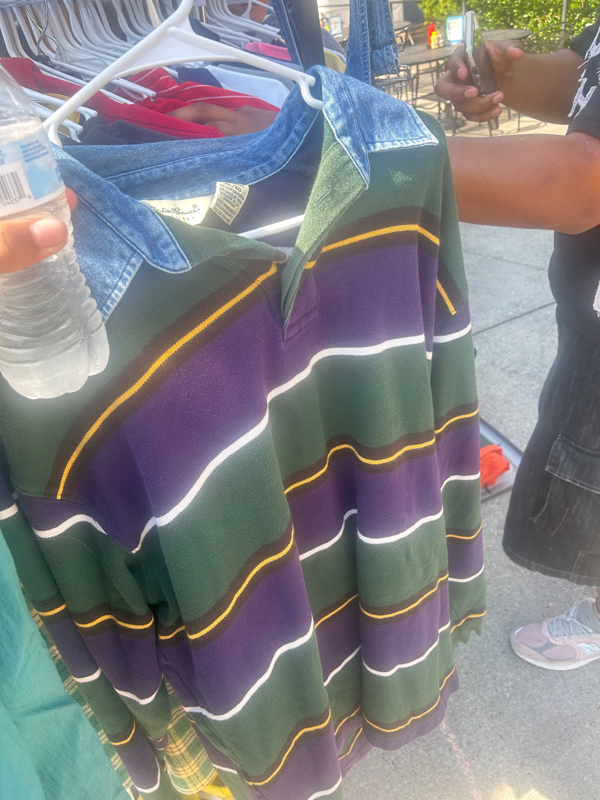
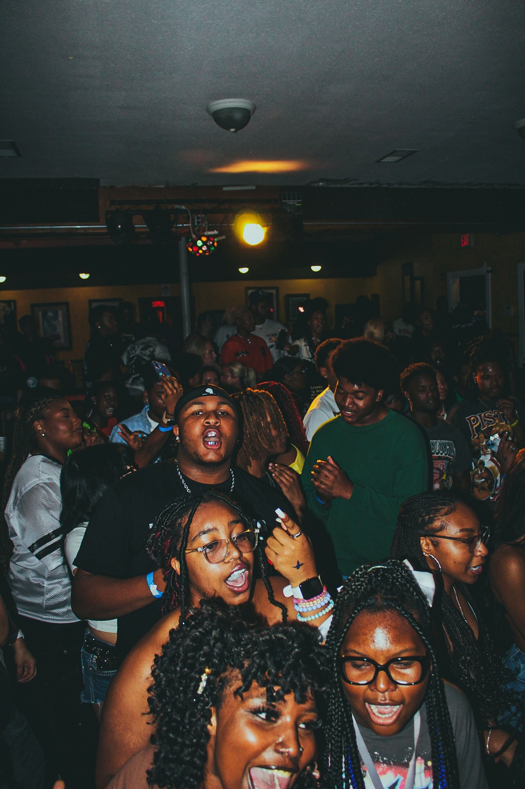
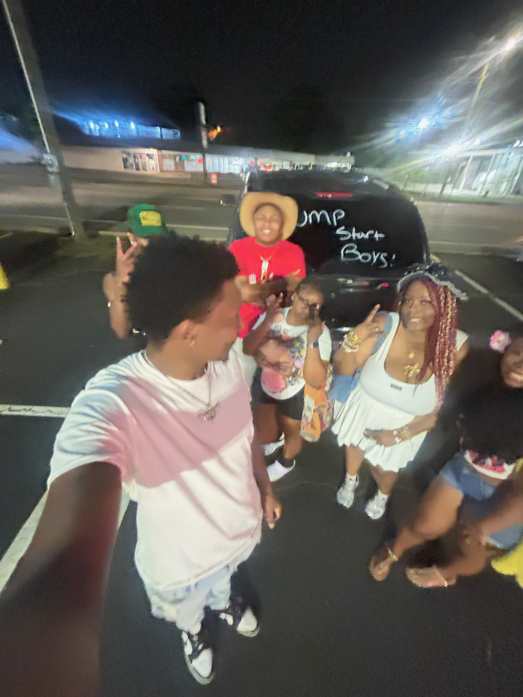

Summer of 2025 Experience
Over the summer, I spent a lot of time focusing on things I enjoy and making the most of my free time. I was consistent with lifting, which helped me stay active and work on my fitness goals. I also went to several car meets, where I got to see some amazing cars and connect with people who share the same passion. Another thing I enjoyed was going thrifting, since it’s a fun way to find unique clothes and pieces that fit my style. I also spent a lot of time partying with friends, which gave me the chance to make great memories and enjoy the summer vibe. Overall, it was a fun and balanced summer filled with hobbies, friends, and new experiences.
in conclusion, my summer was a great mix of fun, fitness, and friendship. I'm grateful for all the experiences I had and the people I met along the way.I was able to spend time doing the things I love while also creating new memories with friends. The balance between staying active and enjoying social activities made it even more meaningful. Overall, this summer gave me a chance to recharge, grow, and get ready for what’s ahead.
Things I Did
- Traveled to atlanta to get my grills
- Saw a lot of cars over the summer
- Went thrifting for unique clothes
- Partied with friends and made great memories
Couple of photos from the Summer
Below you will find some of my favorite photos from the summer:
  These photos capture some of the best moments from my summer adventures. Each picture tells a story and brings back great memories of the fun times I had.
Check out my social media for more updates!
Follow my instagram Follow my TikTok